01
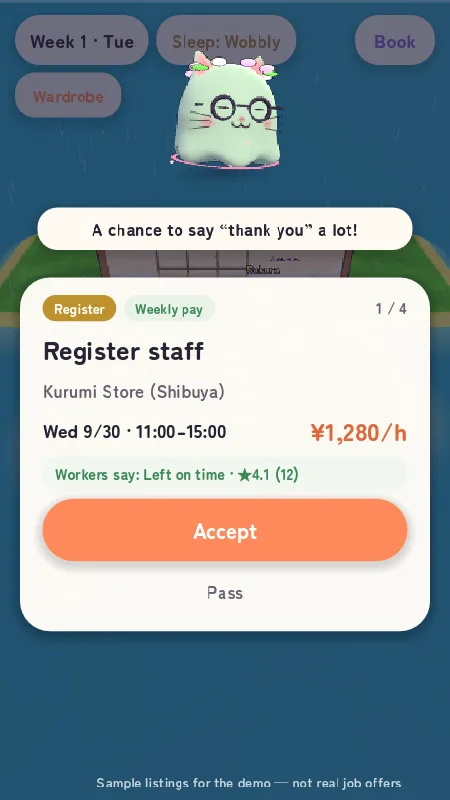
Find your next shift.
Your cat brings a few sample jobs that fit your preferences. See the pay and worker reviews, then accept or pass.
A game for people who work shifts
Find a shift, spend the day with your cat, and build a little world to come home to.
Free browser prototype. Sample jobs. The first game load can take a few dozen seconds.

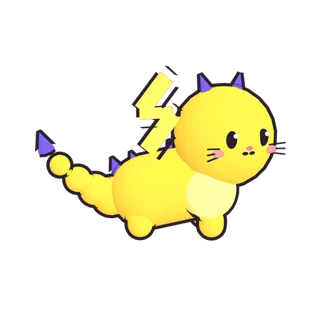
A little world,built around your day.
Different places. A familiar face.
A café on Tuesday. A shop on Friday. Paw Time is for people whose workplaces and coworkers keep changing. Your companion and your island give that changing week a little continuity.
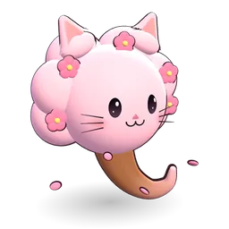
Your day, with a little more magic
A familiar rhythm connects the work you do to a world you make your own.

Your cat brings a few sample jobs that fit your preferences. See the pay and worker reviews, then accept or pass.
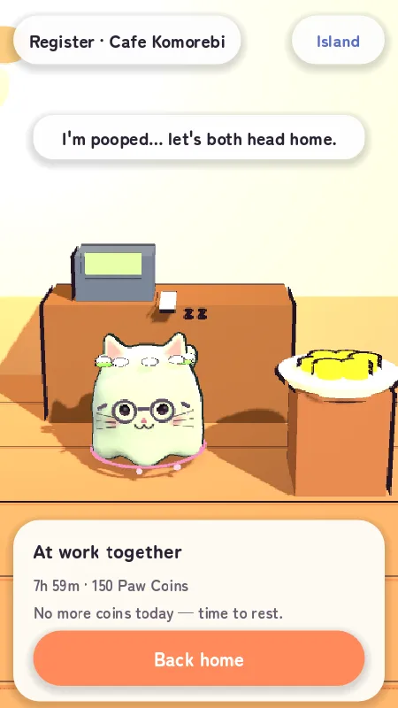
During a shift, your cat works in its own tiny shop. It visibly tires, and its game-coin earnings eventually stop.
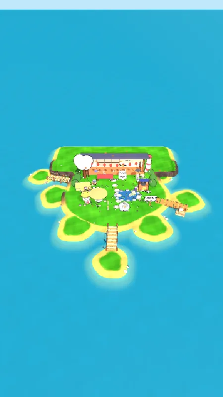
Scoop glowing orbs, meet new companions, and build your island. There is something to enjoy on days off, too.
Screens from the prototype. Jobs shown are samples, not real job offers.
See the actual game
From meeting your cat to a morning hatch, the 44-second film shows the game in motion. Then try it for yourself.
For a guided run, choose “3-minute demo” on the game’s title screen. If it opens in Japanese, choose “EN” there. Starting that route can replace an existing save; the game asks first.
Actual gameplay. English on-screen text.
Designed around a working life
The idea is to make a working day feel a little more personal. The game’s rewards have limits; they are never your wages.
The shift-completion reward does not increase with the length of that shift.
Coins accumulate during shifts, with a daily cap and a 7.5-hour daily limit. They cannot be exchanged for money.
Collect, decorate and dress up without needing another shift. Rest is part of the loop, alongside making your space your own.
A closer look, for judges
A playable game, a proposed business, and a hypothesis to test. Each has a different level of evidence.
| The game Playable prototype | Companion quiz, sample job cards, working together, orb collecting, wardrobe and island building. The film shows these screens; the browser build lets you explore them. |
|---|---|
| The jobs Sample data | Listings and demo shifts are examples, not live job offers. The current prototype does not establish real hiring outcomes. |
| The business Proposed model | A free core game, with employers paying for listings and shift matching. Optional cosmetic purchases are planned. Payment flows and employer willingness to pay still need validation. |
| The impact To validate | Do workers choose to return between shifts, and does the companion feel supportive? A worker pilot is the next step. Effects on sleep, overwork and hiring remain unvalidated. |
Godot 4, with 3D characters and a browser export.
A TypeScript API and a separate employer web app in the monorepo.
Local game progress plus a separate usage-analytics path. See the data notes for its boundaries.
A few friends you might meet
Sleepy, sunny, a little strange. Thirty rare companions bring their own character to your island.
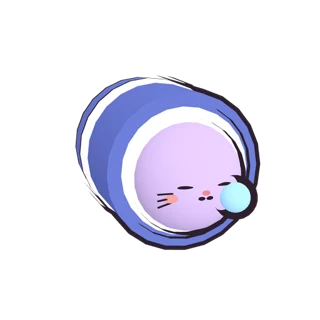
A tiny expert at taking it easy.
A little company on rainy days.
A touch of spring, wherever you go.
Explore the characters by theme. This is a character gallery, not a list of tasks to complete.
30 companions
Sleep
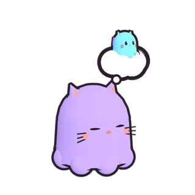
Sleep
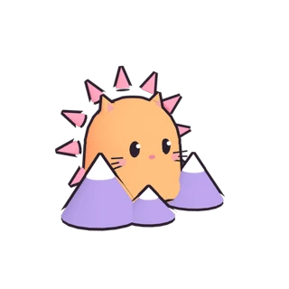
Sleep
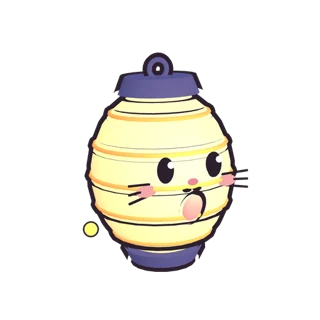
Sleep

Sleep
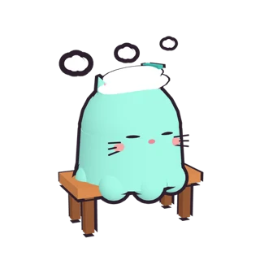
Sleep

Firsts
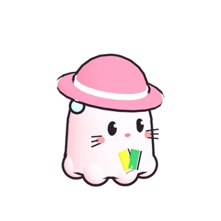
Firsts

Firsts

Firsts
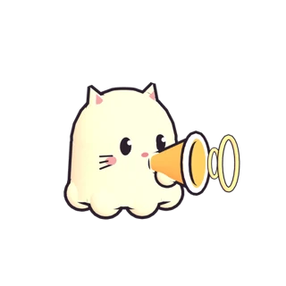
Firsts
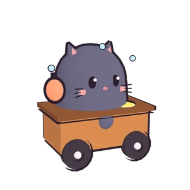
Time of day
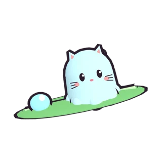
Time of day
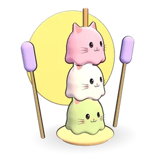
Time of day

Time of day

Time of day
Weather

Weather
Weather
Weather

Together
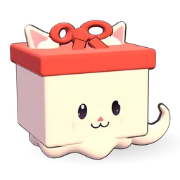
Together

Together
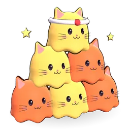
Together

Together
Rhythm
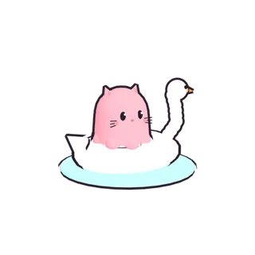
Rhythm
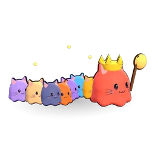
Rhythm

Rhythm

Rhythm
Meet your companion. Make the island yours.